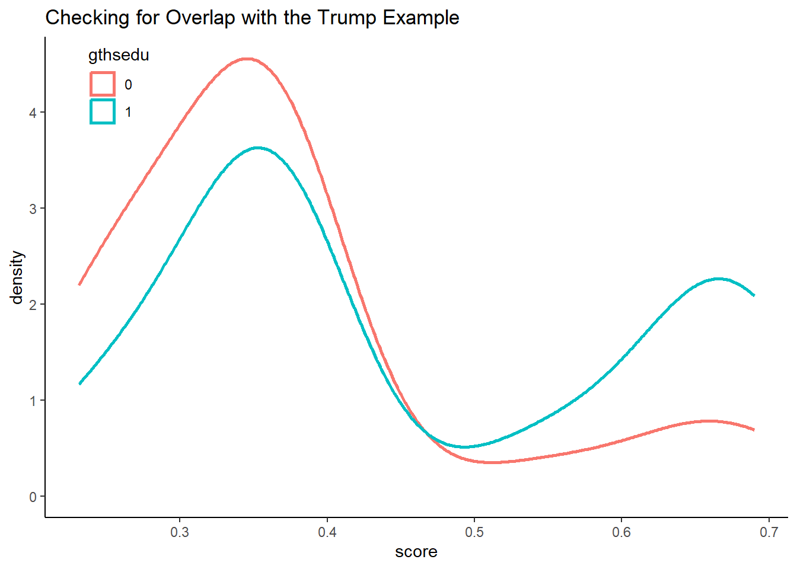
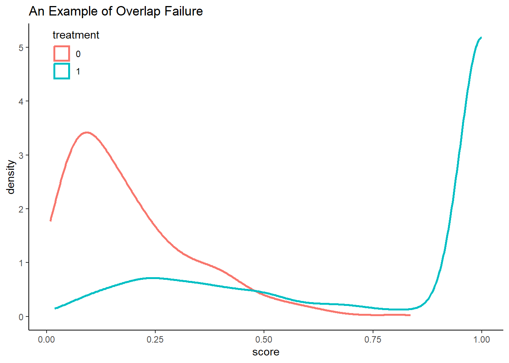
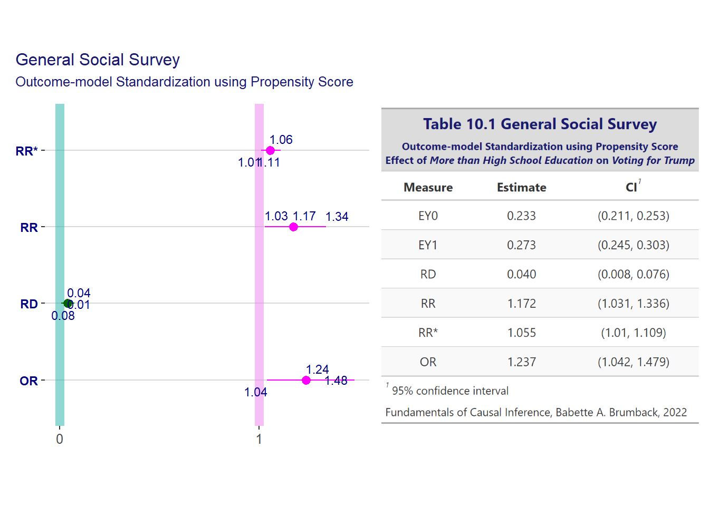
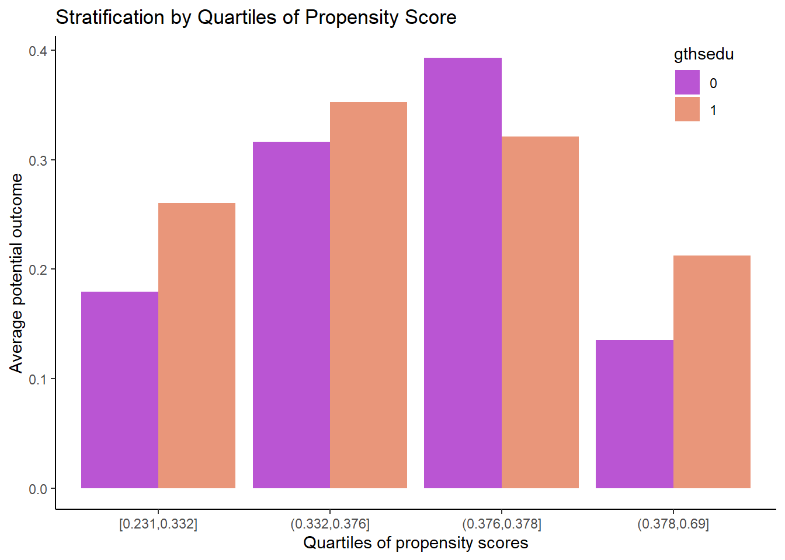

library(conflicted)
library(rsample)
library(dplyr)
library(Matching)
library(patchwork)
library(ggplot2)
library(fciR)
options(dplyr.summarise.inform = FALSE)
conflicts_prefer(dplyr::filter)10 Propensity-Score Methods
10.1 Theory
Assuming
\[ \{ Y(t) \} \perp\!\!\!\perp T \mid H \]
Rosenbaum and Rubin proved that
\[ \{ Y(t) \} \perp\!\!\!\perp T \mid e(H) \]
where \(e(H)\) is the propensity score.
The theory holds exactly when \(e(H)\) is a known function of \(H\). […]. The theory is also approximately true when the parameters of \(e(H)\) are estimated. For instance when using the logistic model.
10.1.1 Checking for overlap
An important assertion of the distribution of propensity score is that it must exist for the two treatment. This is done by comparing the histograms of each treatment group to each other. It can also be better illustrated by using the propability density (as a smoothed version of the histograms).
10.1.1.1 Effect of High-School education on Voting for Trump
To illustrate we use the example of section 6.2.2. The same results are found in table 6.10 of subsection 6.2.2 on p. 120.
The data used is
data("gss", package = "fciR")
gssrcc <- gss |>
dplyr::select(c("trump", "gthsedu", "magthsedu", "white", "female", "gt65")) |>
tidyr::drop_na()and we repeat the function used in section 6.2.2 to show these results
a_formula <- trump ~ gthsedu + magthsedu + white + female + gt65
gssrcc.exp <- fciR::backdr_exp(
data = gssrcc,
formula = a_formula,
exposure.name = "gthsedu",
confound.names = c("magthsedu", "white", "female", "gt65"))
# convert the results from log to natural scale
gssrcc.exp <- gssrcc.exp |>
dplyr::select(-std.err) |>
mutate(estimate = if_else(grepl(pattern = "^log", x = term),
exp(estimate), estimate),
term = sub(pattern = "^log", x = term, replacement = "")) |>
identity()
gssrcc.exp term estimate
1 EY0 0.23106003
2 EY1 0.27162760
3 RD 0.04056758
4 RR 1.17557159
5 RR* 1.05569620
6 OR 1.24104646and these estimates used the following propensity score. For details, look in the function fciR::backdr_exp by using F2. You can look in section 6.2.2, p. 119-120 for the algorithm of function standexp.r which is the same as fciR::backdr_exp using base R instead of tidyverse.
Additionally the function prop.r in section 6.2.2, p. 120, also compute the propensity scores. It is found in the fciR package as prop_scores().
So, the propensity scores are
#|label: ch10_gssrcc.scores
eformula <- gthsedu ~ magthsedu + white + female + gt65
eH <- fitted(glm(formula = eformula, family = "binomial", data = gssrcc))
assertthat::assert_that(all(!dplyr::near(eH, 0)),
msg = "eH must not equal zero")[1] TRUEgssrcc.scores <- data.frame(
gthsedu = gssrcc$gthsedu,
score = eH)which gives the density plot
ggplot(data = gssrcc.scores, aes(x = score, colour = as.factor(gthsedu))) +
# adjust bandwith bw = 0.05 to be like textbook
# see pag 178, the author uses bw = 0.05
geom_density(bw = 0.05, size = 1) +
theme_classic() +
theme(legend.position = c(0.1, 0.9)) +
labs(title = "Checking for Overlap with the Trump Example", color = "gthsedu")Warning: Using `size` aesthetic for lines was deprecated in ggplot2 3.4.0.
ℹ Please use `linewidth` instead.
10.1.1.2 Overlap failure
We generate the data
nooverlap <- function(n = 1000, seed = NULL) {
# Generate two confounders
H1 <- rnorm(n)
H2 <- rbinom(n, size = 1, prob = 0.3)
# Form a complex function of the confounders
# the author uses e
eF <- exp(H1 + 3 * H2 - 1.5) / (1 + exp(H1 + 3 * H2 - 1.5))
# Let T0 depend on the complex function
T0 <- rbinom(n, size = 1, prob = eF)
# Let T1 = H2
T1 <- H2
# Let the treatment be the maximum of T0 and T1
`T` <- pmax(T0, T1)
# Fit a propensity score model
eH <- fitted(glm(formula = `T` ~ H1 + H2, family = "binomial"))
data.frame(
treatment = `T`,
score = eH
)
}
nooverlap.df <- nooverlap(n = 1000, seed = as.integer(as.Date("2022-09-05")))
# range(nooverlap.df$score[nooverlap.df$treatment == 0])
# range(nooverlap.df$score[nooverlap.df$treatment == 1])then plot the scores
ggplot(nooverlap.df, aes(x = score, colour = as.factor(treatment))) +
# adjust bandwith bw = 0.05 to be like textbook
# see pag 178, the author uses bw = 0.05
# also uses trim = TRUE to show each density over it's true range
# i.e., no need for the range computations of the author
geom_density(bw = 0.05, trim = TRUE, size = 1) +
theme_classic() +
theme(legend.position = c(0.1, 0.9)) +
labs(title = "An Example of Overlap Failure", color = "treatment")
10.2 Using the Propensity Score in the Outcome Model
gssrcc <- gss[, c("trump", "gthsedu", "magthsedu", "white", "female", "gt65")]
gssrcc <- gssrcc[complete.cases(gssrcc), ]We simply add the propensity score to the data. Just be careful to use the right formula. We use the function fciR::prop_scores which is an alias of the function prop.r from section 6.2.2.
gssrcc.propensity <-
fciR::prop_scores(gssrcc, formula = gthsedu ~ magthsedu + white + female + gt65)
assertthat::assert_that(all(!dplyr::near(gssrcc.propensity$scores, 0)),
msg = "Must be != zero.")[1] TRUEgssrcc <- data.frame(
gssrcc,
pscore = gssrcc.propensity$scores)
# str(gssrcc)a_formula <- trump ~ gthsedu + pscore
gssrcc.pscore <- boot_est(data = gssrcc,
func = backdr_out,
times = 250, alpha = 0.05, transf = "exp",
terms = c("EY0", "EY1", "RD", "RR", "RR*", "OR"),
formula = a_formula, exposure.name = "gthsedu",
confound.names = "pscore")
stopifnot(all(gssrcc.pscore$.estimate[1:4] - c(0.233, 0.272, 0.040, 1.170) < 0.01))which gives us the same result as in table 10.1
df <- gssrcc.pscore
tbl <- fciR::gt_measures(df,
title = paste("Table 10.1", "General Social Survey"),
subtitle = paste(
"Outcome-model Standardization using Propensity Score",
"Effect of <em>More than High School Education</em> on <em>
Voting for Trump</em>",
sep = "<br>"))
p <- fciR::ggp_measures(df,
title = NULL,
subtitle = NULL)
tbl <- fciR::gt2ggp(tbl)
p + tbl + plot_annotation(title = "General Social Survey",
subtitle = "Outcome-model Standardization using Propensity Score") &
theme(title = element_text(color = "midnightblue", size = rel(0.9)))
10.2.1 Using the propensity score to estimate the conditinal treatment effect
Many researchers use the propensity score to estimate the conditional treatment effect instead of the standardized treatment effect.
glm(formula = trump ~ gthsedu + pscore, family = "binomial",
data = gssrcc) |>
broom::tidy()# A tibble: 3 × 5
term estimate std.error statistic p.value
<chr> <dbl> <dbl> <dbl> <dbl>
1 (Intercept) -1.15 0.148 -7.77 7.56e-15
2 gthsedu 0.210 0.105 2.00 4.59e- 2
3 pscore -0.110 0.360 -0.304 7.61e- 1where the conditional odd ratio is
glm(formula = trump ~ gthsedu + pscore, family = "binomial",
data = gssrcc) |>
broom::tidy() |>
dplyr::filter(term == "gthsedu") |>
dplyr::select(estimate) |>
exp() |>
dplyr::pull() |>
identity()[1] 1.2336910.3 Stratification on the Propensity Score
This function can be found in the fciR package as prop_quant.
fnc_prop_quant <- function(data, outcome.name, exposure.name, confound.names,
probs = 0:4/4, quant_var = "pquants") {
# fit the propensity score model using the prop.r, alias fciR::prop_scores,
# from chapter 6
eformula <- paste(exposure.name, paste(confound.names, collapse = "+"),
sep = "~")
pscores <- fciR::prop_scores(gssrcc, formula = formula(eformula))$scores
# put participants into quartiles
pquants <- cut(pscores, quantile(pscores, prob = probs), include.lowest = T)
# add the quartiles to the data
data <- data |>
mutate(!!quant_var := pquants)
# estimate the average potential outcome within each quartile
oformula <- paste(outcome.name, paste(exposure.name, "pquants", sep = "*"),
sep = "~")
oformula <- paste(c(oformula, "1", exposure.name), collapse = "-")
# print(oformula)
fit <- glm(oformula, data = data)
coefs <- coef(fit)
ncoefs <- length(coefs)
msg <- "nb of coefs must be even. Changing the quantiles usually solves this."
assertthat::assert_that(ncoefs %% 2 == 0, msg = msg)
EY0 <- coefs[1:(ncoefs/2)]
EY1 <- coefs[1:(ncoefs/2)] + coefs[(1 + ncoefs/2):ncoefs]
meanRD <- mean(EY1 - EY0)
# must return a data.frame of tidy results to use with bootstrap later
data.frame(
term = 'meanRD',
estimate = meanRD,
std.err = NA_real_)
}gssrcc <- gss[, c("trump", "gthsedu", "magthsedu", "white", "female", "gt65")]
gssrcc <- gssrcc[complete.cases(gssrcc), ]outquant <- fnc_prop_quant(gssrcc, outcome.name = "trump", exposure.name = "gthsedu",
confound.names = c("magthsedu", "white", "female", "gt65"),
probs = 0:4/4)
outquant term estimate std.err
1 meanRD 0.03045919 NAWe obtain very similar results to those of the author’s. The diference in intervals is caused, as usual, by the fact that we the percentile method of interval rather than the normalized one (using 1.96 as critical value) as the author usually does.
gssrcc.pquant <- fciR::boot_est(
seed = 18181,
gssrcc, func = fnc_prop_quant,
outcome.name = "trump",
exposure.name = "gthsedu",
confound.names = c("magthsedu", "white", "female", "gt65"),
probs = 0:4/4)
gssrcc.pquant# A tibble: 1 × 6
term .lower .estimate .upper .alpha .method
<chr> <dbl> <dbl> <dbl> <dbl> <chr>
1 meanRD -0.00891 0.0372 0.0831 0.05 percentileand the histogram is
gssrcc <- gss[, c("trump", "gthsedu", "magthsedu", "white", "female", "gt65")]
gssrcc <- gssrcc[complete.cases(gssrcc), ]gssrcc.propensity <-
fciR::prop_scores(gssrcc, formula = gthsedu ~ magthsedu + white + female + gt65)
assertthat::assert_that(all(!dplyr::near(gssrcc.propensity$scores, 0)),
msg = "Must be != zero.")[1] TRUEgssrcc.out <- data.frame(
gssrcc,
pscore = gssrcc.propensity$scores) |>
mutate(pquant = cut(pscore, quantile(pscore, prob = 0:4/4),
include.lowest = TRUE, ordered_result = TRUE,
dig.lab = 3)) |>
group_by(gthsedu, pquant) |>
summarize(mean_out = mean(trump)) |>
mutate(gthsedu = as.factor(gthsedu))
# gssrcc.outggplot(gssrcc.out, aes(x = pquant, y = mean_out, fill = gthsedu)) +
geom_bar(position = "dodge", stat = "identity") +
scale_fill_manual(values = c("0" = "mediumorchid", "1" = "darksalmon")) +
theme_classic() +
theme(legend.position = c(0.9, 0.9)) +
labs(title = "Stratification by Quartiles of Propensity Score",
x = "Quartiles of propensity scores",
y = "Average potential outcome")
10.4 Matching on the Propensity Score
gssrcc.pscores <- data.frame(
gssrcc,
pscore = gssrcc.propensity$scores)
# str(gssrcc.pscores)gssrcc.match <- Matching::Match(Y = gssrcc.pscores$trump,
Tr = gssrcc.pscores$gthsedu,
X = gssrcc.pscores$pscore,
estimand = "ATE", caliper = 0.25,
replace = TRUE, ties = FALSE)
summary(gssrcc.match)
Estimate... 0.043358
SE......... 0.012614
T-stat..... 3.4372
p.val...... 0.00058786
Original number of observations.............. 2168
Original number of treated obs............... 874
Matched number of observations............... 2168
Matched number of observations (unweighted). 2168
Caliper (SDs)........................................ 0.25
Number of obs dropped by 'exact' or 'caliper' 0 Matching::MatchBalance(trump ~ magthsedu + white + female + gt65,
data = gssrcc, match.out = gssrcc.match)
***** (V1) magthsedu *****
Before Matching After Matching
mean treatment........ 0.18182 0.24493
mean control.......... 0.26581 0.24493
std mean diff......... -21.756 0
mean raw eQQ diff..... 0.083488 0
med raw eQQ diff..... 0 0
max raw eQQ diff..... 1 0
mean eCDF diff........ 0.041995 0
med eCDF diff........ 0.041995 0
max eCDF diff........ 0.083989 0
var ratio (Tr/Co)..... 0.76322 1
T-test p-value........ 2.6725e-05 1
***** (V2) white *****
Before Matching After Matching
mean treatment........ 0.95176 0.7214
mean control.......... 0.64518 0.7214
std mean diff......... 142.95 0
mean raw eQQ diff..... 0.30798 0
med raw eQQ diff..... 0 0
max raw eQQ diff..... 1 0
mean eCDF diff........ 0.15329 0
med eCDF diff........ 0.15329 0
max eCDF diff........ 0.30658 0
var ratio (Tr/Co)..... 0.2008 1
T-test p-value........ < 2.22e-16 1
***** (V3) female *****
Before Matching After Matching
mean treatment........ 0.46939 0.55627
mean control.......... 0.58502 0.55627
std mean diff......... -23.149 0
mean raw eQQ diff..... 0.11503 0
med raw eQQ diff..... 0 0
max raw eQQ diff..... 1 0
mean eCDF diff........ 0.057817 0
med eCDF diff........ 0.057817 0
max eCDF diff........ 0.11563 0
var ratio (Tr/Co)..... 1.0272 1
T-test p-value........ 3.4011e-06 1
***** (V4) gt65 *****
Before Matching After Matching
mean treatment........ 0.31725 0.2131
mean control.......... 0.17864 0.21218
std mean diff......... 29.756 0.22523
mean raw eQQ diff..... 0.13915 0.00092251
med raw eQQ diff..... 0 0
max raw eQQ diff..... 1 1
mean eCDF diff........ 0.069308 0.00046125
med eCDF diff........ 0.069308 0.00046125
max eCDF diff........ 0.13862 0.00092251
var ratio (Tr/Co)..... 1.4781 1.0032
T-test p-value........ 6.9199e-10 0.15725
Before Matching Minimum p.value: < 2.22e-16
Variable Name(s): white Number(s): 2
After Matching Minimum p.value: 0.15725
Variable Name(s): gt65 Number(s): 4